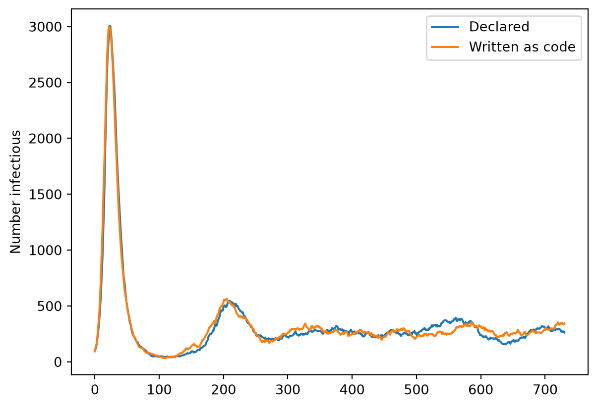
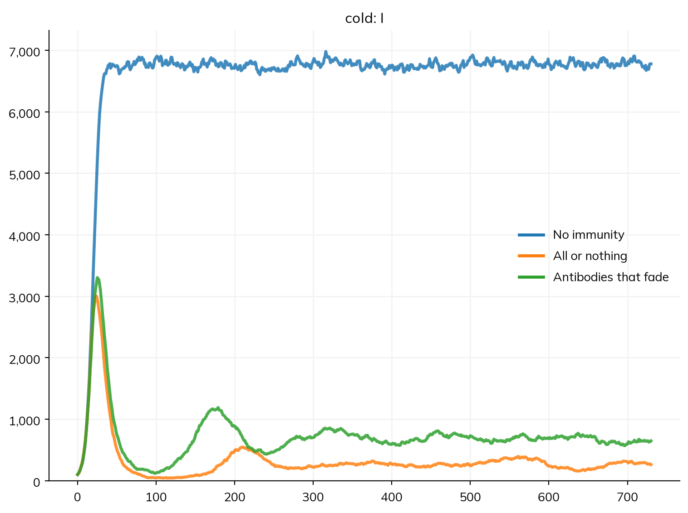
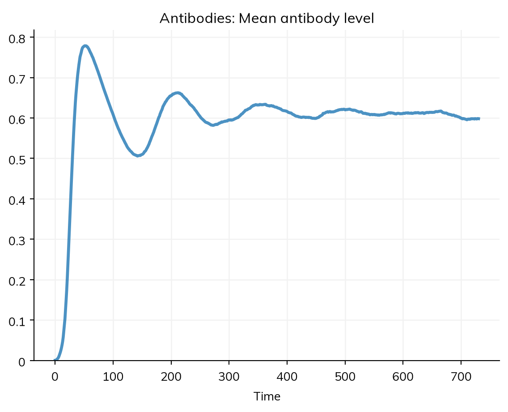
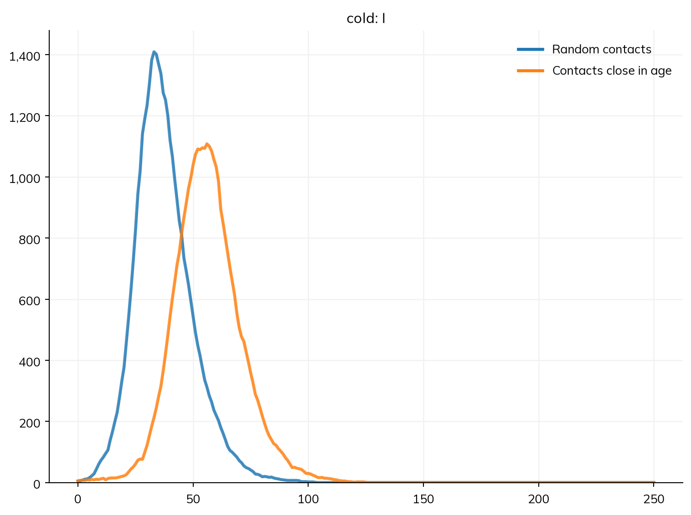

import numpy as np
import matplotlib.pyplot as plt
import starsim as ss
import starsim.library as ssl
class SIRS(ssl.AgentSIR):
def __init__(self, pars=None, *args, **kwargs):
super().__init__()
self.define_pars(
dur_imm = ss.expon(scale=ss.days(180)), # How long immunity lasts after recovery
)
self.update_pars(pars, **kwargs)
# SIR states are added automatically; here we add the time of losing immunity
self.define_states(
ss.TimeArr('ti_susceptible', label='Time of becoming susceptible again'),
)
return
def set_progression(self, uids):
""" Schedule recovery and death as usual, then schedule the waning of immunity """
super().set_progression(uids)
recovering = uids[np.isfinite(self.ti_recovered[uids])] # Agents who are going to die have ti_recovered = NaN
self.ti_susceptible[recovering] = self.ti_recovered[recovering] + self.pars.dur_imm.rvs(recovering)
return
def step_state(self):
""" Do the usual SIR transitions, then return agents whose immunity has waned to susceptible """
super().step_state()
waning = (self.recovered & self.ti_susceptible.due()).uids # Those whose time has come
self.recovered[waning] = False
self.susceptible[waning] = True
returnA5 – Custom modules
Most of the science in a Starsim model lives in its modules. Diseases, networks, demographics, interventions, analyzers, and connectors are all modules, and they all share the same structure. Most of a model can be declared: states, transitions, rates, deliveries, and modifiers, as in the tutorials so far. Sooner or later, though, a model of individual people needs something none of these say: a quantity that each person carries and that changes continuously, a rule of your own for who meets whom, or a disease whose course is easiest to say step by step. Then you write a module as code: a Python class whose methods Starsim calls at each step, which can read and change anything in the sim.
T9 wrote an analyzer and an intervention as code. This tutorial writes the other kinds that agent-based models most often need, each a small step from what can be declared:
- A disease written as code: the waning immunity of A1, as Starsim 3 wrote it, to compare with the declared version.
- A quantity for each person: immunity that fades gradually, which a declared model can’t say, in a module of its own.
- A network written as code: contacts with people of a similar age.
Each gives up a little of what Starsim knows about the model (what describe() can show, which solvers can run it) in return for freedom.
Choosing a base class
Rather than subclassing ss.Module directly, you almost always want to subclass one of the module types, so that your module is run at the right point in the simulation loop and ends up in the right place on the sim:
| Base class | Use for | Added to the sim via |
|---|---|---|
ss.Disease, ss.Infection |
Disease natural history and transmission | diseases= |
ss.Network |
Who contacts whom | networks= |
ss.Demographics |
Births, deaths, migration | demographics= |
ss.Intervention |
Actions that change the simulation | interventions= |
ss.Analyzer |
Recording results without changing anything | analyzers= |
ss.Connector |
Interactions between modules | connectors= |
ss.Module |
Anything that doesn’t fit the others | custom= (or as a positional argument) |
A disease written as code
In A1, immunity that wanes was one more declared transition, R >> S. Here is the same SIRS model written as code. Rather than starting from a blank page, the easiest approach is usually to inherit from a template and change only what’s different. ssl.AgentSIR is the SIR model written as code (it is Starsim 3’s ss.SIR); its states are per-agent arrays, susceptible, infected, and recovered, and its methods move agents between them:
The new class includes the following main changes:
- In
__init__()we added the extra parameter (dur_imm) and state (ti_susceptible) that the model needs. We don’t need to redefine the SIR states, since we inherit them. ssl.AgentSIR.set_prognoses()does two things: it callsset_infection()to make the agents infectious, thenset_progression()to schedule what happens to them next. Waning immunity is part of the second, so that’s the only one we extend: we callsuper()to do the usual scheduling, then sample a waning time for everyone who is going to recover. Agents who are going to die instead haveti_recoveredset toNaN, which is how we filter them out.step_state()likewise callssuper()and adds only the recovered → susceptible transition.
Here it is next to the declared SIRS of A1, with the same R0 (0.4 per day × 7 days = 2.8) and durations. A disease whose transmission is written as code transmits over the sim’s networks, so both are given a mixing pool in which everyone has one contact a day, which is the same as homogeneous mixing with β = 0.4 per day:
coded = SIRS(beta=ss.perday(0.4), dur_inf=ss.expon(scale=ss.days(7)), p_death=0, init_prev=0.01, name='cold')
S, I, R = ss.states('S I R')
declared = ss.Disease(
infection = S >> I @ 0.4*I, # A chance of infection of 0.4 per contact per day
recovery = I >> R @ ss.days(7),
waning = R >> S @ ss.days(180),
init_prev = 0.01,
name = 'cold',
)
pars = dict(networks=ss.MixingPool(n_contacts=1), n_agents=10_000, stop=ss.days(2*365), verbose=0)
sim_coded = ss.Sim(coded, **pars)
sim_declared = ss.Sim(declared, **pars)
sim_coded.run()
sim_declared.run()
plt.figure()
plt.plot(sim_declared.results.cold.timevec, sim_declared.results.cold.I, label='Declared')
plt.plot(sim_coded.results.cold.timevec, sim_coded.results.cold.infected, label='Written as code')
plt.ylabel('Number infectious')
plt.legend();
The two are the same model, and give the same epidemic, up to chance: a large first wave, and then smaller waves as immunity wanes. They work out the chance of infection in a step the same way (the rate times the share of people who are infectious, turned into a chance), and round each duration to whole steps the same way, so they agree at any step: over four seeds at daily steps, the first wave peaks at 3032 people infectious when coded, and 3015 when declared. What differs is what Starsim knows about them. The declared disease can be shown (describe(), diagram(), equations()), run as an ODE or a stochastic compartmental model as well as agents, and fitted with sim.fit(); its results are named after its states and transitions. The coded one is a set of methods: it runs only as agents, and Starsim can’t show what it does. So for a model that can be declared, declare it. Write a disease as code when its course is easier to say in code than in transitions, or to keep a Starsim 3 model as it was (a Starsim 3 subclass of ss.SIR can subclass ssl.AgentSIR unchanged).
The parts of a module
The class above shows the parts that most modules have:
- Parameters. In
__init__(), callsuper().__init__()first, then declare the parameters with their defaults withself.define_pars(), then apply any user-supplied overrides withself.update_pars(), which raises an error for a parameter that wasn’t declared (catching typos early). Rates and durations should use Starsim’s time parameters (e.g.ss.days(),ss.peryear()), so they scale correctly with the timestep. - States. Per-agent arrays that persist across timesteps, declared with
self.define_states():ss.BoolStatefor true or false,ss.FloatArrfor a number, andss.TimeArrfor a time, as a step number (due()gives those whose time has come, rounding a time between steps up or down at random in proportion, so durations keep their mean). Each becomes an attribute (self.ti_susceptible); it grows as agents are born, and eachss.BoolStategives a result, the number of people for whom it is true. Track per-agent data this way, never as a plain Python attribute or a hand-built array. - Results. Time series of your own, declared in
init_results()withself.define_results()and filled in each step atself.ti. - The work.
step()(or, for a disease,step_state()and the methods it calls), which Starsim calls once per timestep. Inside it,self.simgives access to the whole simulation,self.tiis the current timestep, andself.t.dtis the module’s timestep. Useself.simrather than a variable from outside the class, since the sim works on its own copy of each module. - Randomness. For anything random, use a Starsim distribution (e.g.
ss.expon,ss.bernoulli,ss.normal) as a parameter or an attribute, rather than callingnp.randomdirectly, so your results stay reproducible and scenarios differ only where they should; see Random numbers.
A quantity for each person: immunity that fades
In both versions above, immunity is all or nothing: people are fully protected until they move back to S, and then not protected at all. For many respiratory infections, protection fades gradually as antibodies decline, so each person’s susceptibility depends on how long ago they recovered. That is a per-person quantity that changes continuously, which a declared model has no words for, but which is a few lines of code.
The module holds each person’s antibody level. It is 1 just after recovery and halves every half_life. It is an ss.Module, since it is neither a disease nor an intervention, and it reads who recovered in the last step from the declared disease (recovery.uids):
class Antibodies(ss.Module):
""" Each person's antibody level: 1 on recovery, then halving every half_life """
def __init__(self, half_life=ss.days(90), **kwargs):
super().__init__()
self.define_pars(
half_life = half_life,
)
self.update_pars(**kwargs)
self.define_states(
ss.FloatArr('level', default=0.0, label='Antibody level'),
)
return
def init_results(self):
super().init_results()
self.define_results(
ss.Result('mean_level', label='Mean antibody level'), # A mean (a ratio), so not scaled by the number of people per agent
)
return
def step(self):
decay = 0.5**(self.t.dt/self.pars.half_life) # The share left after one step
self.level[:] = self.level*decay
recovered = self.sim.diseases.cold.recovery.uids # Those who recovered in the last step
self.level[recovered] = 1.0
return
def update_results(self):
super().update_results()
self.results.mean_level[self.ti] = self.level.mean()
returnThe infection itself has no immunity here: people go back to S when they recover (an SIS model), and the antibodies are its only protection. The module keeps the level, and a modifier says what it does: it multiplies each person’s susceptibility by what the antibodies leave of it. A modifier never overwrites the quantity it changes, so the disease’s own rel_sus is kept, and describe() lists the modifier as part of the model:
S, I = ss.states('S I')
sis = ss.Disease(infection=S >> I @ 0.4*I, recovery=I >> S @ ss.days(7), init_prev=0.01, name='cold')
def susceptibility(sim):
""" Each person's susceptibility: 1 minus their antibody level """
return 1 - sim.custom.antibodies.level
protection = ss.modify(sis.rel_sus, multiply=susceptibility)To compare, here are the infection with antibodies that halve every 90 days, the same infection with no immunity at all, and the all-or-nothing SIRS, whose protection lasts 180 days on average, about as long as the antibodies take to halve twice:
sims = {
'No immunity': ss.Sim(sis, **pars),
'All or nothing': ss.Sim(declared, **pars),
'Antibodies that fade': ss.Sim(sis, Antibodies(), connectors=protection, **pars),
}
msim = ss.parallel(sims)
msim.plot('cold.I')
With no immunity, the infection settles at once at an endemic level. With either kind of immunity, the first wave leaves many people protected, so the number infectious falls and then rises again as protection is lost. With antibodies that fade, people regain some susceptibility soon after recovering, instead of none at all until they lose their protection entirely, so the second wave comes sooner and is larger, and the infection settles at about twice the level it does with all-or-nothing immunity. The module’s own result is among the sim’s results, under the module’s name:
msim.sims['Antibodies that fade'].results.antibodies.mean_level.plot()
A module that keeps a value for each person works on agents, so a sim with one runs as agents, and declared diseases in the same sim run as agents too, with no change to how they are written.
A network written as code
The networks of A2 pair people at random, or as partners. Suppose instead that people mostly meet others of a similar age: children at school, adults at work, older people with each other. A network written as code is a subclass of ss.Network (or of one of its subclasses) that overrides how edges are made: add_pairs() makes them, and step(), called every step, here removes the day’s contacts and makes new ones. self.append() adds edges, given as the UIDs of the two people in each (p1 and p2) and a transmission multiplier for each (beta).
To pair people of similar ages, sort them by their age plus a little random noise (with a standard deviation of spread), and connect each person with their neighbors in that order:
class AgeNet(ss.Network):
""" Contacts each day with people close in age """
def __init__(self, n_contacts=4, spread=ss.years(2), **kwargs):
super().__init__()
self.define_pars(
n_contacts = n_contacts, # The number of contacts each person has each day (an even number)
spread = spread, # How far apart in age contacts tend to be
)
self.update_pars(**kwargs)
self.noise = ss.normal(0, 1) # A Starsim distribution, so that the draws are reproducible
return
def add_pairs(self):
uids = self.sim.people.alive.uids
age = self.sim.people.age[uids] + self.pars.spread.years*self.noise.rvs(uids) # Each person's age, blurred a little
order = uids[np.argsort(age, kind='stable')] # Everyone, from youngest to oldest
p1, p2 = [], []
for k in range(1, self.pars.n_contacts//2 + 1): # Each person, with the k-th next person in the order
p1.append(order[:-k])
p2.append(order[k:])
p1 = np.concatenate(p1)
p2 = np.concatenate(p2)
self.append(p1=p1, p2=p2, beta=np.ones(len(p1)))
return
def step(self):
self.remove_edges(np.ones(len(self), dtype=bool)) # Yesterday's contacts end...
self.add_pairs() # ...and today's begin
returnBefore using a network, check that it makes what you meant. Here, the ages of the two people in each contact should be nearly the same, and each person should have about 4 contacts:
S, I, R = ss.states('S I R')
cold = ss.Disease(infection=S >> I @ 0.1*I, # A chance of infection of 0.1 per contact per day: with 4 contacts, R0 = 0.1 × 4 × 7 = 2.8
recovery=I >> R @ ss.days(7), init_prev=0.001, name='cold')
pars = dict(n_agents=5000, stop=ss.days(250), verbose=0)
sim = ss.Sim(cold, networks=AgeNet(), **pars)
sim.init()
df = sim.networks.agenet.to_df()
age = sim.people.age
print('Correlation of the ages of contacts:', round(np.corrcoef(age[ss.uids(df.p1)], age[ss.uids(df.p2)])[0, 1], 3))
print('Contacts per person:', round(2*len(df)/len(sim.people), 2))Correlation of the ages of contacts: 0.992
Contacts per person: 4.0Now compare it with a random network with the same number of contacts:
sims = {
'Random contacts': ss.Sim(cold, networks=ss.RandomNet(n_contacts=4), **pars),
'Contacts close in age': ss.Sim(cold, networks=AgeNet(), **pars),
}
msim = ss.parallel(sims)
msim.plot('cold.I')
The number of contacts is the same, but when they are close in age, the epidemic is slower and flatter. The infection still reaches about as many people in the end, but each case’s contacts overlap more with those of the person who infected them (people of the same age meet each other), so it can’t jump straight across the population, and spreads more slowly. A contact matrix with many narrow age groups would give much the same, under every solver (T4): a network written as code is worth it when the rule is about individuals, such as who is in which household, school, or partnership, rather than about groups.
Which to use
| What you write | What Starsim still does | What is given up | |
|---|---|---|---|
| Declared | States, transitions, deliveries, modifiers | Everything: describe(), every solver, fitting |
Nothing, if it can say what you need |
| Declared, with a little code | A function of the sim as a rate, a condition, or a modifier’s amount | Results, solvers that can take the function, fitting | Speed (the function runs once a step), and showing what the function does |
| A module written as code | A class with step() (and states, results, parameters) |
Time, people, random numbers, parallel runs, its results | Showing what the module does, and solvers other than agents if it keeps a value for each person |
| A disease or network written as code | A subclass of ss.Infection or ss.Network |
The same, and transmission over the sim’s networks | The same, and fitting its structure |
Start declared, and move down the table only for the part that needs it. Here, the SIRS model didn’t need code at all; the antibodies needed a module, but only for the antibody level itself, with a declared disease and a modifier for the rest; and the network needed code for its rule of who meets whom. When code is slow, because it loops over agents in Python, @ss.jit compiles a function with Numba, with no change to what it does; see Custom modules in the user guide, which also covers the order in which Starsim calls a module’s methods, demographics and connectors written as code, and the pitfalls.
Exercises
- Change the half-life of the antibodies to 30 days and to 365 days. How does each change the endemic level of infection, compared with no immunity and with the all-or-nothing SIRS?
- Give
AgeNeta parameterp_random, the share of each person’s contacts that are with anyone at random rather than with people close in age (hint: shuffle a share of the order before pairing, or add a second, random network). How large does it have to be before the epidemic looks like the one with random contacts? - The
SIRSclass schedules each person’s loss of immunity at recovery. Write anSIRSin which immunity is lost instead with a constant chance each step (an exponential duration, drawn step by step), using anss.bernoullidistribution instep_state(). Does it give the same epidemic?
Further reading
- Mesa: introductory tutorial: writing agents and their rules as Python classes
- NetworkX: graph generators: ready-made graphs that can be turned into a Starsim network (
ssl.StaticNet) - LASER: documentation: agent-based models written as compiled per-agent code
- Numba: a 5-minute guide: compiling Python loops, as
@ss.jitdoes